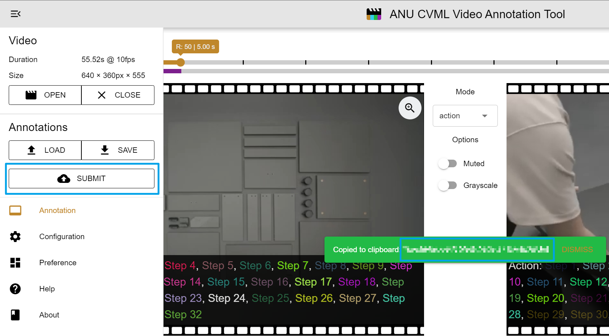

You may be required to fill a registration form if you are the first
time to use MTurk.
Worker registration
Find Our Hit
Search for IKEA Assembly
Instruction Video Segmentation and Accept.Expand to read the
instruction.Open the link in a new tab.
Annotation In Vidat
Vidat Introducation
Header a video caching
status and a dark mode toggle.Keyframe Panel on the
left, you can play the video segment specified by the range or edit
keyframe list. In the middle, you can change the frame of left/right
panel by dragging the left/right thumb or the entire range, the purple
below indicates the frames annotated by actions. One the right, you can
quick locate the keyframe(s).Left/Right Canvas Panel and
Control Panel (in the middle) there is an action indicator on
the left-bottom corner to show actions which cover current
frame.Action / Video Segment
Table you can modify the action annotaion List.
Steps
Click the thumbnail to view each
step.Locate left and right panel to align
start and end frame.Click the second button on the
corresponding row to set start and end time for this
segment.Once the duration is longer than 0, the
warning color will disappear.Delete the segment if it is not shown in
the video.Open the side menu after finishing
annotation, and click submit button

Your submission id will be notified and
copied to your clipboard.